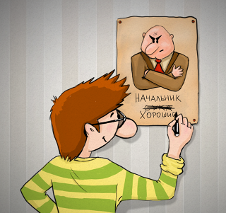

Привет, Хабр! Я управляю командами разработки уже 10 лет.
Недавно меня попросили поделиться на внутренней конференции «секретами управления» с другими руководителями. Поводом стала низкая текучка в моём подразделении и здоровый дух внутри команды — так было на всех моих работах. Я отказался, сославшись на то, что не делаю для этого ничего особенного. Сработала внутренняя установка «не будь выскочкой».
Потом я вспомнил, что живу в мире пустозвонов, не стесняющихся нести «знания» в массы: бизнес-консультанты без бизнеса, карьерные консультанты без карьеры, коучи по чему угодно после двухмесячных курсов от таких же коучей. Неопытные умы, наслушавшись их, думают, что так мир и устроен, а потом огорчаются, что ничего не вышло. А опытные крутят у виска и отмалчиваются.
Поэтому выключаю тумблер «не будь выскочкой» и делюсь «секретами».

Тут не будет стандартных «делегируй», «налаживай процесс», «стой в правильной позе на стендапе» — об этом написано уже достаточно. Будет о другом.
Для некоторых статья может выглядеть по-капитански «будь умным, а дураком не будь», потому что никаких супер-рецептов в ней нет: простые вещи, но про них многие почему-то забывают. А кто-то, может быть, увидит в ней вредные советы.
Но я уверен, что после прочтения кому-то захочется направить пару советов своему руководителю или взять на заметку для себя.
Это первый и самый важный пункт. Никогда не забывай, что все мы люди: Васи, Кати, Русланы. Звучит, по-моему, банально, но для многих руководителей люди на работе превращаются только в человеко-часы.
А что, удобно ведь. У человека-часов не может быть проблем: у них не бывает плохого настроения, не может заболеть голова.
Даже если ты их всех называешь по именам, ребята всё равно чувствуют, кто они для тебя: люди или человеко-часы. И человеко-час никогда не подойдёт к тебе со своей проблемой, потому что ты начнёшь торговаться: давай ты сегодня пойдёшь домой, а завтра отработаешь. Человеко-часу проще дотерпеть до конца дня.
Для меня быть человеком – это обсуждать с человеком его личную проблему и не вмешивать сюда рабочие вопросы. Это когда между спасением горящего проекта и человеком ты выбираешь человека и решаешь его проблему, а не проблему проекта. Это когда ты не начальник, а друг.
Работа рано или поздно закончится, а отношения с людьми будут продолжаться. Я на своей практике не видел, чтобы этим злоупотребляли и тем более воспринимали как слабость. И никогда из-за этого не страдали проекты.
Когда ты был исполнителем, ты постоянно читал техническую литературу, статьи и смотрел видеоуроки. Когда ты стал руководителем, твоим инструментом становятся люди, но ты дальше продолжаешь читать только техническую литературу.
Управлять людьми – это не что-то естественное, получаемое из молока матери. Конечно, без книг тоже получится командовать, но будешь это делать непрофессионально, тяп-ляп. Это как писать свою сортировку вместо использования встроенной в язык функции просто из-за незнания, что она существует.
Тебе, как руководителю, нужно будет отстаивать интересы твоей команды, и ты с этим справишься куда лучше, если будешь владеть теорией переговоров и понимать психотип человека, с которым говоришь.
Поэтому, став руководителем, обязательно читай книги: не только «Как управлять», но и литературу по психологии, устройству мышления, найму людей, переговорам, маркетингу, управлению проектами, экономике.
Кто-то написал, что авторитета без страха не бывает. Мол, если тебя не боятся, то и считаться с твоим мнением не будут. Я видел руководителей, которые действительно так считают. Их жизненный принцип: «я – начальник, ты – дурак, остальное не имеет значения».
В моём мире авторитет можно завоевать только экспертизой: ты обязан разбираться в тех вещах, которыми управляешь. Это касается руководителя любого уровня. У топ-менеджера могут и должны быть профильные помощники, но, управляя ракетной отраслью, ты должен в ней хоть что-то понимать. Без этого авторитета не будет.
Если ты руководишь командой разработки, ты обязан знать принципы разработки и базовые вещи: паттерны, коллекции, алгоритмическую сложность и т.д. В идеале — ты должен быть программистом, хотя бы в прошлом. Ты можешь не знать всех тонкостей языка, особенно если у тебя большая команда и используется много языков, но ты должен уметь этот код читать и знать о существовании основных фреймворков.
Без понимания того, чем управляешь, ты не сможешь оценивать ни сроки, ни риски, ни стоимость.
Говори с людьми на одном языке. Никаких «меня не интересует, как вы это будете делать» — так команда перестанет тебя уважать и будет за спиной величать «эффективным менеджером».
Если чего-то не понимаешь, то либо изучай это, либо не пытайся этим управлять. Не надо стараться быть самым умным, но и самым тупым быть тоже не нужно.
Я в жизни и на работе совершал много ошибок. И всегда честно их признавал. Прямо на встрече говорил: «Блин, ребята, я лоханулся. Вы три недели делали не то, потому что я ошибся. Теперь давайте делать по-другому». Ты всё равно никого не обманешь, пытаясь юлить, как уж на сковородке. И тем более не нужно пытаться свалить свой косяк на кого-то – это сразу минус 200 в твой авторитет.
Публичное признание своих косяков имеет магический эффект. У команды возникает чёткое понимание, что ошибаться нестрашно и это абсолютно нормально. Они понимают, что из-за ошибок они не выглядят глупее, никто их сильно не ругает. Они становятся более смелыми в работе, берут на себя ответственность, чаще рискуют — всё это на длинной дистанции даёт сильные конкурентные преимущества как самим людям, так и компании.
Если люди всегда работают под страхом совершить ошибку, то они будут очень консервативны,
перестанут применять инновационные подходы и свежие знания. Это чётко заметно в гос. секторе, где развит карательный механизм: там человек может 5 лет хорошо работать, а потом лишиться премии за одну ошибку. Бред же.
Я часто стою в копии писем, где мои ребята ведут переписку с кем-то. Иногда я вижу, что человек из моей команды предлагает неверное решение.
В этом случае я не лезу в общую переписку, показывая какой я умный ценой выставления моего сотрудника не в лучшем свете. Вместо этого я пишу или звоню человеку и говорю, что он ошибся в письме. Мы обсуждаем правильное решение, и он от своего имени пишет его.
Не нужно публично ставить людей в неудобное положение – дай им возможность самим реабилитироваться.
Ты должен быть щитом, который принимает на себя весь удар. Всегда защищай те решения, которые предлагает твоя команда. Даже если они не всегда правильные, всё равно выступи как демпфер, а потом внутри команды разберись и скорректируй их.
Ни у кого в компании не должно быть права воздействовать на твою команду мимо тебя. Даже у твоего начальника. Если кто-то хочет покритиковать твоих сотрудников – пусть это делает в твой адрес, а ты уже сам разберёшься.
Если нужно, защищай команду и от самой компании. Ввели какое-то новое бюрократическое правило – подумай, как можно не отвлекать на него команду.
Всегда говори, как есть. Если проект перестал получать финансирование и скоро загнётся — расскажи об этом честно. Если есть планы что-то поменять — тоже рассказывай про них заранее, а не ставь перед фактом.
Если в компании есть планы по сокращению персонала — не молчи об этом. Лучше потом скажи, что планы не сбылись, чем по факту вручать уведомление. Если в компании планируют повысить всем зарплату — тоже рассказывай.
Команда должна быть всегда в курсе происходящего в фирме и лучше, если они это будут узнавать от тебя.
Давай только те обещания, которые можешь исполнить. Не в силах поднять им зарплату — так и скажи. Не надо вот этих вот: «сейчас тяжёлая экономическая обстановка, а вот завтра точно всё наладится». Ты не знаешь, наладится или нет, а индекс доверия к тебе упадёт.
Если в жизни ты весельчак, который любит подкалывать друзей и родственников, оставайся таким и на работе.
Если ты хочешь назвать что-то говном, то называй это говном, а не фекалиями. Если кто-то написал херовый код, то так ему и скажи: «Ты написал херовый код».
Я говорю не про высокую зарплату, а именно про справедливую среди сотрудников компании. Иногда ты не в силах сделать её всем самой высокой на рынке. Всегда найдётся компания, которая платит больше и человек, который получает больше.
Чтобы понять, справедливая она или нет, я для себя использую вот какой приём: если в один день все зарплаты в компании станут публичными, будет ли мне перед кем-то из команды стыдно? Если да — плохо, надо исправлять.
Всегда следи за рынком и добивайся для своей команды повышений. Если ты понимаешь, что после ухода Васи тебе нужно будет искать на его место человека на бОльшую зарплату — делай всё, чтобы Васе её повысили.
Если видишь, что человек хочет расти карьерно — помоги ему в этом. Если не можешь сделать это в рамках своей команды — найди ему место в другой. Не можешь в рамках компании — отпусти человека и дай ему хорошую рекомендацию. Прямо возьми и сам позвони его будущему руководителю и расскажи о том, какой крутой спец к ним уходит.
Только не соверши случайно ошибку, когда хорошего разработчика делаешь плохим менеджером или когда ты «назначаешь начальником» того, кто этого не особо и хотел, а отказаться не может. Если сомневаешься — попробуй повысить человека в «демо-режиме»: временно надели новыми функциями, а потом спроси, понравилось ли ему. Или, уйдя в отпуск, оставь его за главного и посмотри, как он справится.
Если ты будешь постоянно растить свою команду, то и сам будешь расти.
Я бывал на встречах, где руководители приводили своих подчиненных, чтобы те рассказали заказчику, почему накосячили. Для меня это выглядело ну оооочень странно.
Ты, как руководитель, отвечаешь за всё, что происходит. Тебе за это бабки платят. Когда кто-то накосячил, ты всю вину берёшь на себя, а потом сам уже решаешь, нужно тебе с сотрудником разбираться или нет.
Часто из-за этого неопытные руководители опускаются до микроменеджмента. Типа, если вина всегда моя, то и решения все принимаю только я — это ошибка-ловушка. Так ты рискуешь превратиться в центр принятия абсолютно всех решений, утонешь в работе и сделаешь свою команду несамостоятельной. И при этом всё равно будешь совершать ошибки.
Команда должна принимать решения без тебя, а ты, как истинный руководитель, должен за них отвечать.
Но это ни в коем случае не означает, что у людей не должно быть никакой ответственности. Как раз её должно быть у них много, только выносить это наружу не нужно — ты человека этой ответственностью наделил, ты с него и спрашивай.
С тобой работают высокооплачиваемые специалисты, которых специально взяли за их знания и умения — доверяй им. Не нужно перепроверять за ними работу и не нужно им разжёвывать, что делать.
Не надо устраивать бестолковые совещания, на которых не решается ничего. Каждодневные статусные встречи по 1,5 часа — это от низкого уровня доверия. 15-минутные стендапы в скраме в том числе — я могу написать про их неэффективность и слепое следование любым методологиям отдельную статью.
Не делай из себя человека, без которого работа встанет — это путь в никуда и ложное чувство нужности. Ты не сможешь отдыхать в отпуске, не сможешь спокойно поболеть. Процессы должны быть построены так, чтобы команда могла работать без тебя. Идеальный вариант — это когда тебя ни разу не побеспокоили за две недели отпуска.
Это ни в коем случае не делает тебя бесполезным человеком. Ровно наоборот — это говорит о том, что ты сумел выстроить процессы так, что в них нет точек отказа.
Всегда учитывай Bus-фактор. Понятно, что кто-то лучше справляется с определёнными задачами и есть соблазн давать эти задачи именно ему, но это опасный путь.
У нас на работе реально случился Bus-фактор, когда главного сис. админа сбила машина. Были и инструкции, и доступы, и много чего было. Не было только человека, который бы смог этим всем воспользоваться. Была иллюзия, что всё задокументировано и это поможет быстро подхватить дело. На практике умным ребятам потребовалось полгода, чтобы въехать.
Поэтому старайся делать ротацию задач. Да, Вася сделает её медленнее и хуже, чем Петя, но зато у Васи появится экспертиза и ему будет интересно ковыряться в чём-то новом — двойная польза.
Точно так же найди человека, который бы мог выполнять и твою функцию тоже: поручи ему часть твоих задачи, обучай. Твоя замена всегда должна быть готова.
Меня это не раз спасало.
Ты не можешь всего знать. Для этого и набирают команды, чтобы использовать знания каждого. Не бойся задавать глупые вопросы и открыто признавать, что в чём-то ты не силён. Иногда я это делаю умышленно. Особенно, когда появляются новые люди в команде. Так я подаю сигнал, что не знать, просить помощи и учиться — это нормально. И ещё так мы психологически меняемся местами, когда не я им объясняю, а они мне — это действительно классно работает.
Если можешь дать от себя какие-то удобные плюшки сверх того, что даёт компания — обязательно делай это.
В компании можно два дня работать дома? Разреши своим ребятам 3 дня.
Стандарт компании — Windows. Выбей для своих Linux или Mac.
Всем индексация зарплаты на 5%. Убеди руководство, что твои заслуживают на 7%.
Вышел человек спасать компанию в выходной день — дай ему +1 день отдыха к полагающейся по закону компенсации.
Тогда твоё подразделение всегда будет немного элитарным и в него захотят попасть. Будут хотеть работать не просто в компании, а именно у тебя в подразделении.
Не претендуй на личное время людей. Не агитируй активно за всякие тим-билдинги. Люди и так захотят пообщаться вне работы и сделают это без твоих «давайте-давайте».
Закончился рабочий день — не доставай людей и забудь про работу сам. Они и так отдали работе бОльшую часть светового дня, не пытайся отобрать у них оставшееся время. Конечно же, они тебе ответят и даже выйдут на работу, если попросишь. Только очень быстро прочухают, если это был искусственный дедлайн, а не реальная производственная необходимость.
Отпуск — неприкосновенное время. Если у кого-то появляется необходимость каждый день названивать человеку в отпуске и тем более просить его поработать — ты сделал что-то неправильно, нужно исправлять. Этот человек — узкое место. Только без перегибов: понятно, что позвонить на 2 минуты что-то спросить — это нормально.
Готовьте помидоры. Кидаться сейчас в меня будете :-)
Сколько бы не говорили, что «лишь бы человек был хороший», всё равно люди обращают внимание и делают выводы по твоему внешнему виду.
Запах нестиранных вещей, кольцо в носу, розовые волосы, ошейник с шипами, футболка «АУЕ» — это крест на твоей карьере. На это ещё могут закрыть глаза, если берут тебя тестировщиком или разработчиком, но никакого карьерного роста у тебя не будет. Можно сколько угодно разглагольствовать о справедливости, индивидуальности, предвзятости и прочем, но всё равно твой внешний вид влияет на многое происходящее вокруг — так устроена психология людей.
Подтянутый, приятно пахнущий харизматичный руководитель, понимающий, когда надеть шорты, а когда костюм, добьётся бОльшего, чем воняющий потом и носками чувак с сальной розовой головой, пусть он даже и умнее.
Второго первого впечатления не будет.
Периодически спрашивай у команды, что им нравится или не нравится, что они хотели бы поменять. Можно это делать 1 на 1, можно коллективно, можно анонимно. Получив обратную связь, честно расскажи о том, что беспокоит людей.
Если у тебя в подчинении другие руководители, у тебя обязательно должен быть механизм анонимной обратной связи от любого сотрудника. И вообще всегда имей такой механизм: людям что-то может не нравится, но и открыто они это сказать не готовы.
Иногда в коллектив попадают тяжёлые люди. Ты не смог это определить на собеседовании или тебе досталась уже готовая команда. Они разлагают весь коллектив, а невозможность что-то с ними сделать ещё больше демотивируют всех.
Для таких случаев у тебя должен быть административный рычаг, чтобы воздействовать на этих людей: это может быть премия, возможность перевести человека из твоего подразделения или даже правильно составленный трудовой договор и должностные обязанности. Должно быть что-то более действенное, чем «ай-яй-яй, какой ты нехороший».
Хорошо, если тебе никогда не придётся этим воспользоваться, но рычаг должен быть. Как подушка безопасности в машине.
И ты поменяешь компанию, и ребята тоже будут уходить. Это не повод прекращать общение, иногда даже наоборот. Всегда расставайся нормально и старайся поддерживать связь после увольнения. Не исключено, что в будущем кто-то из них станет твоим руководителем.
Периодически интересуйся их делами и спрашивай, не хотят ли они вернуться. Кто-то может разочароваться в новом работодателе и постесняться попроситься назад. А тут ты сам предлагаешь.
С работы ты можешь унести только две вещи: опыт и связи. Цени эти вещи.
Будь добрым, но не слабым. Будь лояльным, но не сажай себе на шею. Умей требовать от людей результат. Если есть какие-то оговоренные правила — они должны соблюдаться всеми и тобой в том числе.
Не позволяй вырабатывать мнения, что твои поручения можно игнорировать. Умей публично хвалить людей и умей их приватно ругать. Научись вести переговоры, чтобы отстаивать свои позиции и добиваться своего.
В общем, исполняй свою функцию, а не будь просто формальностью.
Это общий совет вообще для любого специалиста. Человек, который не боится быть уволенным, сможет предлагать смелые рискованные решения.
Финансовая подушка позволит тебе отстаивать свою позицию у руководителей выше и прибавит смелости говорить «дайте я это сделаю, если не выйдет — уволите». Это очень сильный приём, заслуживающий уважения, но будь готов, что тебя действительно уволят.
Человек, который боится потерять работу, работает менее эффективно — он не рискует, отмалчивается. Отказывается от повышения, потому что переживает, что не справится и потеряет работу.
Да, даже без финансовой подушки ты сможешь найти завтра новую работу. А в голове в это время червячок «а вдруг не сможешь, чего делать будешь?» — он тебе мешает.
Нет. Это только вершина айсберга. Недостаточно только теории — нужна, как и везде, практика и свои ошибки, свои победы.
Но придерживаясь этих несложных правил, у тебя будет фора в сто вёрст перед теми, кто о них не догадывается.
Удачного тебе управления.